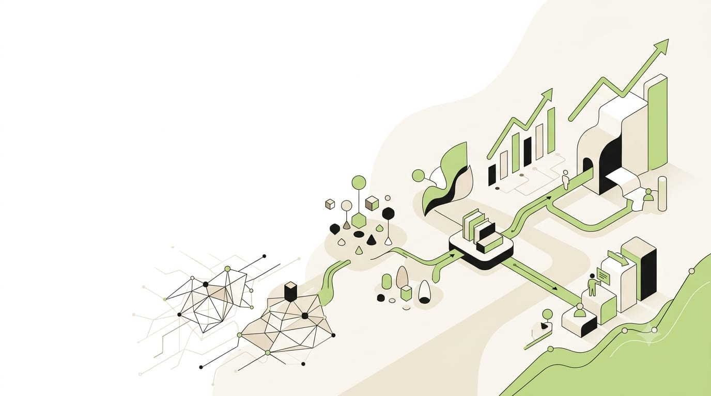

Labour Market Intelligence · Skill Alignment
Turn labour-market evidence into training decisions.
Kaushora converts industry demand into skill gaps, curriculum alignment, capacity plans and career guidance — every number traced to its source, every gap tied to an action.
loading…
Grounded in NCO 2015 · SSC Qualification Packs · WEF Future of Jobs reports

Signature workflow
Demand → Gap → Action
Each stage is computed live from the authoritative dataset. Select a stage to inspect it.
01DemandReal demand signals from the dataset — with honest gaps where records don't exist.
02GapIndustry requirements compared against course and curriculum coverage.
03ActionEvidence-backed ADD, UPDATE and REVIEW recommendations per course.
04OutcomeCandidates matched to roles with missing skills and learning pathways.
Platform
One intelligence loop, six working surfaces
Everything below reads from the same backend — no mock screens.
Live snapshot
What the evidence says right now
Fetched live from the backend.
Responsible data
No evidence, no number
The catalog uses real public evidence (NCO, SSC Qualification Packs and WEF). To demonstrate every interactive feature, job demand, district capacity, placements and employer surveys use deterministic synthetic demo data, visibly marked is_synthetic=1. This keeps the demo complete without presenting generated values as real-world evidence.